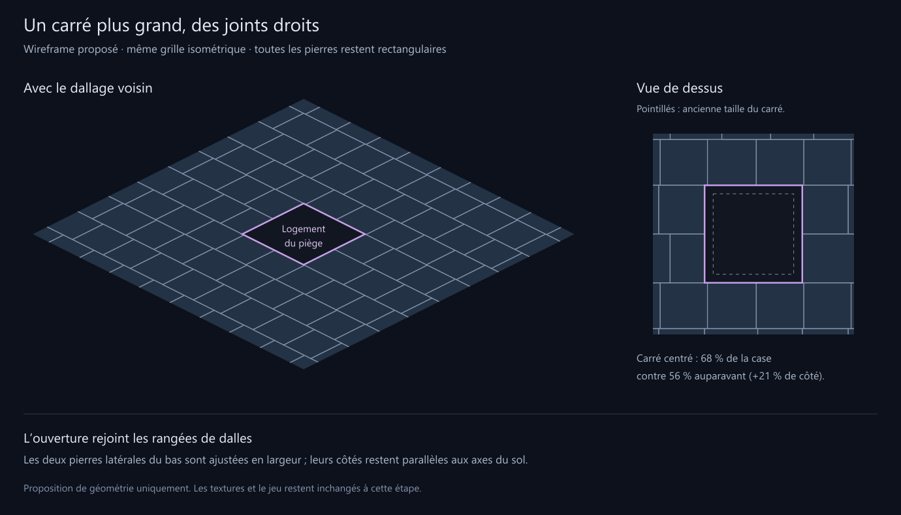

Agrandir le détail · Géométrie · Vérifications
Le carré passe de 56 à 68 % de la largeur de la case. Les deux pierres latérales du bas changent de largeur pour rejoindre son bord droit. Aucun joint oblique dans le plan du sol. Proposition à valider avant de revenir aux textures.